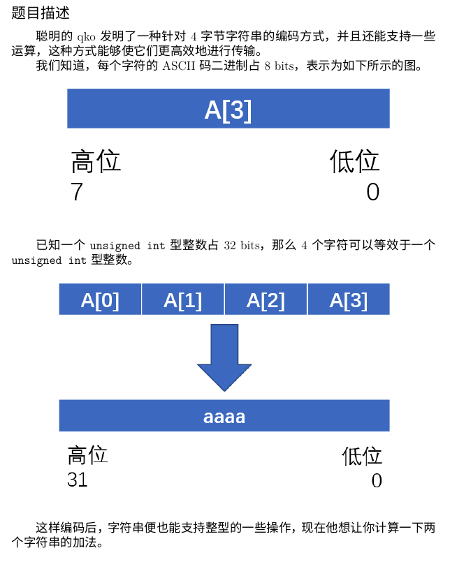

1000: A+B Problem
题目描述
用来适应环境的题目，自然比较简单些。 计算2个整数的和。这两个整数都在1到1000之间。
输入
输入只有一行，包括2个整数a, b。之间用一个空格分开。
输出
输出只有一行（这意味着末尾有一个回车符号），包括1个整数。 必须用print（）输出你的结果，才能通过OJ的评判
样例输入
样例输出
1001: Python 的 Hello World
题目描述
请在一行输出 "Python = Pile + sensensen"
输入
程序无输入
输出
按照题目要求输出
样例输出
1002: Python 成绩
题目描述
森森最近学习了Python课，这门课程的总成绩计算方法是：总成绩=作业成绩×20%+小测成绩×30%+期末考试成绩×50% （课程实际评分规则请以任课教师要求为准） 森森想知道，这门课程自己最终能得到多少分。
输入
输入文件只有1行，包含三个非负整数A、B、C，分别表示森森的作业成绩、小测成绩和期末考试成绩。 相邻两个数之间用一个空格隔开，三项成绩满分都是100分。 0 ≤ A、 B、 C ≤ 100 且 A、 B、 C 都是 10 的整数倍
输出
输出文件只有1行，包含一个整数，即森森这门课程的总成绩，满分也是100分。
样例输入
样例输出
1003: eval() 函数的使用1
题目描述
Pile 学了 eval() 函数，感觉非常好用。所以，她也希望你能掌握这个技能。让我们开始吧。
输入
输入一行一个字符串，表示 eval() 函数所需要执行的语句。保证可以正常执行 eval() 函数。
输出
输出 eval() 函数执行的语句。
样例输入
样例输出
1004: math 库的使用1
题目描述
森森在学专业课的时候，发现一个神奇的函数，叫 gamma 函数。 森森想知道 gamma 函数的值。
输入
输入一行一个正整数 n ，表示森森想要知道的函数值。
输出
输出一行一个浮点数，表示 gamma(n) 的值。
样例输入
样例输出
1005: 字符串存在判定
题目描述
Pile 想要知道，一个字符串在另一个字符串内是否存在。
输入
输入第一个字符串表示字符串 a； 第二行一个字符串 b
输出
输出 'True' 或者 'False' ，表示字符串是否存在。
样例输入
样例输出
参考代码
1006: 回文串的判断
题目描述
Pile 想知道她构造的一个字符串是不是回文串，请你帮她判断一下吧。 回文串的定义是反向排列与原串相同。
输入
一行一个字符串，表示 Pile 提供给你的字符串。
输出
输出 'True' 表示输入的串是回文串；否则输出 'False' 。
样例输入
样例输出
1007: 成绩分析
题目描述
森森的期末考试考完了，她想知道自己的成绩等级。 她的成绩与等级之间是这样转换的： 成绩在 90~100 分之间是 A; 成绩在 80~89 分之间是 B; 成绩在 70~79 分之间是 C; 成绩在 60~69 分之间是 D; 成绩在 0~59 分之间是 F。 请你根据她的成绩计算出她的等级。当然，她可能会输入一个错误的值，这时候请输出 "Error!" 。
输入
输入一行一个整数，表示森森的成绩
输出
输出一个字母或者 "Error!" 表示结果。
样例输入
样例输出
参考代码
1008: 最大公约数
题目描述
Pile 想要知道一个经典问题： 给你两个数，请求出一个数的最大公约数
输入
输入两行，其中： 第一行一个正整数，表示 a 第二行一个正整数，表示 b
输出
输出 a, b 的最大公约数
样例输入
样例输出
我的答案
参考代码
1009: 输出偶数
题目描述
森森最喜欢偶数了。 请你帮她输出 从 1 到 n 的所有偶数~
输入
输入一行一个数，表示上文中的 n
输出
输出多行，保证一行有且只有一个偶数。
样例输入
样例输出
1010: 计算均值
题目描述
Pile 想问你一个问题： 给你 n（1 <= n <= 10000）个整数，求它们的和与均值。
输入
输入第一行是一个整数n，表示有n个整数。 第2~n+1行每行包含1个整数。
输出
输出一行，先输出和，再输出平均值（保留到小数点后5位），两个数间用单个空格分隔。
样例输入
样例输出
1011: 计算阶乘
题目描述
森森想知道 1! + 2! + ... + n!，请你帮她计算一下吧。
输入
输入一行一个整数 n, 表示上文的 n
输出
输出一个整数表示结果
样例输入
样例输出
参考代码
1012: 汇率兑换
题目描述
按照课本中温度转换程序的设计思路，按照 1美元 = 6人民币的汇率编写美元和人民币的双向兑换程序。
输入
输入一行字符串，表示人民币或者美元的数量。保证字符串的最后一位是 A-Z 的字母，其他位置均为数字。 人民币的最后一位一定是 'R' 或者 'r' 美元的最后一位一定是 'D' 或者 'd'
输出
输出转换后的结果。结果表示为一个字符串，前面输出一个整数，最后一位输出 "R" 或者 "D" 表示人民币或者美元。 如果不能转换，输出 "Error!" 。
样例输入
样例输出
参考代码
1013: 进度条的显示
题目描述
实现一个进度条函数，具体的实现方法可以与书上的代码以及对照进行实现。
输入
输入 scale 表示输出进度条的精度。
输出
输出整个执行过程。
样例输入
样例输出
------start------
0 %[->..........]
20 %[**->........]
40 %[****->......]
60 %[******->....]
80 %[********->..]
100 %[**********->]
------end-----
参考代码
1014: 因子数
题目描述
森森非常喜欢数字4和7，看到一个数字她就想快速计算出因子里面分别有几个4和7，但是智商捉急的她总是要算很久，喜欢编程的你能够帮助她吗？
输入
第一行一个整数n，表示给定的数字。
输出
两个用空格隔开的数字，分别表示给定数字的因子中4和7的个数。
样例输入
样例输出
参考代码
1015: 文章检测
题目描述
给你一篇英文文章，请问你里面有多少个空格、数字字符、英文字母和其他字母。
输入
输入多行文字，以 EOF 结束 每一行表示一个文章的段落
输出
输出一行提示信息，具体格式见样例。
样例输入
样例输出
参考代码
stopword=""
stri=""
try:
for line in iter(input, stopword):
stri += str(line) + "\n"
except EOFError:
pass
stri=stri[0:-1]
spaces=0
letters=0
numbers=0
others=0
for i in stri:
if i.isupper() or i.islower():
letters+=1
elif i.isnumeric():
numbers+=1
elif i == " ":
spaces+=1
else:
others+=1
print(f"{spaces} spaces, {numbers} numbers, {letters} letters, {others} other characters.")
1016: eval() 函数的使用2
题目描述
森森希望多了解一下 eval() 函数，于是她给你了几个定义： x = 12, y = 14 她希望你能计算她的表达式。 她可能需要使用 math 库来保证表达式的正常执行。
输入
输入一行字符串表示 x 和 y 的表达式
输出
输出一行一个数，表示字符串的值。
样例输入
样例输出
注意：要点Encodes提交
1017: 质数的和与积
题目描述
Pile 想知道一个简单的问题： 两个质数的和是S，它们的积最大是多少？
输入
一个不大于10000的正整数S，为两个质数的和。
输出
一个整数，为两个质数的最大乘积。数据保证有解。
样例输入
样例输出
提示
推荐写一个函数判断一个数是否是素数
参考代码
1018: 寻找多数元素
题目描述
森森在学习列表的时候，发现一道经典的题目：在一个序列中寻找多数元素。 她给你了一道简化版的问题： 询问你这个序列里面出现次数最多的元素的出现次数。
输入
输入多行，一行一个数表示序列里面的每一个数。 注：使用 try: except EOFError: 来判断什么时候结束输入
输出
输出一行，表示出现次数最多的数字的出现次数。
样例输入
样例输出
参考代码
1019: 判断素数
题目描述
Pile 想实现一个判断素数的函数。当这个数是素数的时候输出 'True' ，不是素数输出 'False' 。 但是她是一个粗心的孩子，她有时候会输入一些奇怪的字符串，这个时候你需要输出 'invalid'。
输入
输入一行一个字符串表示 Pile 的输入。
输出
对于输入，输出一行字符串 'True' 'False' 或者 'invalid' 表示结果。
样例输入
样例输出
参考代码
1020: 所有参数的乘积
题目描述
森森想要写一个返回多个参数的乘积函数。你需要这样调用：
!/usr/bin/python3
print(eval(input()))
输入
输入一行表示字符串，保证字符串的格式为： multi(参数列表) 其中参数列表中每个数以逗号分隔。 保证至少有一个参数。
输出
如果输入的参数均可以参与乘法运算，输出乘积； 否则输出第一个不合法的参数，形式为 : Invalid arg x x 表示第 x 个参数不合法
样例输入
样例输出
参考代码
1021: 到底怎么样才能写好 Python?
题目描述
Pile 想知道，到底怎么样才能写好 Python？你需要输出一篇 Tim Peters 的文章来告诉 Pile。
输入
程序无输入。
输出
输出题目所要求的文章。
样例输入
无
是Python的一个彩蛋，在Python中执行import this会输出“The Zen of Python”（Python之禅）。这是Python语言的指导原则和设计哲学，由Tim Peters撰写。它以一种简洁、富有诗意的方式表达了Python的设计理念和编程风格。
1022: CSV 文件解析
题目描述
森森喜欢将 CSV 文件打开看看，但是当她看到的文件里面都有好多逗号的时候，她觉得很不舒服。 她需要你去把一个 CSV 文件的逗号去掉并换成 \t 。 请你帮帮她吧。
输入
输入多行，表示一个 CSV 文件。
输出
输出多行，表示你的输出。注意逗号都需要换成 \t 。
样例输入
样例输出
提示 这个题，每一行后面加一个 \t 基本就没啥问题了 也可以使用正则库re来解决问题
参考代码
import csv
# 写csv
fo = open("shishi.csv", "w")
list=[]
stopword = ""
stri = ""
try:
for line in iter(input, stopword):
stri += line + "\n"
except EOFError:
pass
stri = stri[0:-1]
list = stri.split(",")
fo.write(",".join(list) + "\n ")
fo.close()
# 读csv
fo = open("shishi.csv", "r")
ls = []
for line in fo:
line = line.replace("\n", "")
ls = line.split(",")
lns = ""
for s in ls:
lns += f"{s}\t"
print(lns)
fo.close()
1023: 重复元素的判定
题目描述
Pile 想知道一个集合里面有没有重复元素，请你帮帮她吧。
输入
输入第一行表示元素的个数 N。 以下 N 行，每行一个数字。
输出
如果有重复元素，请输出两行：第一行"True" ；第二行，输出一个数，表示是第几个元素重复。如果有多个重复的，请输出重复元素中编号最小的； （注：这里重复元素中编号最小的指从第2个重复的元素开始算，如1 2 2则输出第二个2所在的位置3，1 3 4 3输出4，1 3 4 5 3 3输出5，依次类推。） 否则，输出一行 "False" 表示没有元素重复。
样例输入
样例输出
参考代码
1024: 计算集合的并
题目描述
森森喜欢求两个集合的并，请你帮她求一下吧。
输入
输入两行，每行表示一个集合，每个集合的元素（均为数字）以一个空格分隔。
输出
输出一行表示集合。
样例输入
样例输出
1025: 计算标准差
题目描述
Pile 想知道好多个数字的标准差。
输入
输入多行，每行表示一个整数
输出
输出标准差，输出格式可以参考样例。 输出的标准差要求利用科学计数法表示，且只能输出 2 位数，例如 1.2e+09。
样例输入
样例输出
提示 提示：注意 EOFError 输出可以按照这样输出： print("dev = {:.2}.".format(dev(n,m)))
参考代码
1026: 键值查询
题目描述
给你一个集合，请你输出我想要知道的键所对应的值。
输入
输入第一行表示一个集合。 第二行表示我想要知道的键。
输出
输出一个值，表示结果。
样例输入
样例输出
1027: 月份输出
题目描述
Pile 想知道月份的英文表示。她会输入一个月份，请你输出对应的表示。 每个月份用三个英文字母表示，且第一个字母是大写，后面两个是小写。
输入
输入一行一个整数，表示月份的数字。
输出
输出一行一个字符串表示月份。 字符串长度一定是 3 。
样例输入
样例输出
1028: 字符串进制转换
题目描述
请你将一个 10 进制的整数字符串转换成 16 进制。
输入
输入一行字符串，表示一个 10 进制。
输出
输出一个字符串，表示转换的结果。
样例输入
样例输出
1029: CSV 文件转换成 JSON 文件
题目描述
森森有一个 csv 文件，她希望转换成 json 文件。 请你帮她做一下吧。
输入
输入多行，表示 csv 文件。
输出
输出多行，表示 json 文件。
样例输入
样例输出
[
{
" a": " 1",
" b": " 2",
" c": " 3",
"city": "bj"
},
{
" a": " 2",
" b": " 3",
" c": " 4",
"city": "xa"
},
{
" a": " 3",
" b": " 4",
" c": " 5",
"city": "gz"
},
{
" a": " 1",
" b": " 2",
" c": " 2",
"city": "cq"
}
]
参考代码
# 读取表头
headers = input().split(",")
# 读取数据行
lines = []
while True:
try:
row = input().split(",")
if len(row) == len(headers):
o = {}
for i in range(len(headers)):
o[headers[i]] = row[i]
lines.append(o)
except EOFError:
break
# 表头排序
sorted_headers = sorted(headers, key=lambda x: x.lstrip())
new_indices = {} # 新表头对应的旧表头索引
for i in range(len(headers)):
new_index = sorted_headers.index(headers[i])
new_indices[new_index] = i
print("[")
lines_count = len(lines)
col_count = len(headers)
indent = " "
# 按排序后的表头顺序输出
for i in range(lines_count):
print(f"{indent}{{")
for j in range(col_count):
print(f"{indent}{indent}\"{headers[new_indices[j]]}\": \"{lines[i][headers[new_indices[j]]]}\"{',' if j < col_count - 1 else ''}")
print(f"{indent}}}{',' if i < lines_count - 1 else ''}")
print("]")
1030: 集合的交
题目描述
森森森喜欢求两个集合的交，请你帮她求一下吧。
输入
输入两行，每行表示一个集合，每个集合的元素（均为数字）以一个空格分隔。
输出
输出一行表示集合。
样例输入
样例输出
1031: 小型登陆系统
题目描述
给用户三次输入用户名和密码的机会，要求如下：
1）如输入第一行输入用户名为 'Pile' ,第二行输入密码为 'MAKIKAWAYI'，输出 'SUCCESS'，退出程序；
2）当一共有3次输入用户名或密码不正确输出 'FAILED'。
输入
输入最多 6 行。 每两行表示一组测试数据，其中第一行表示账号，第二行表示密码。 保证最后一定能输出结果。
输出
输出一行 'SUCCESS' 或者 'FAILED' ，表示登录成功或者失败。
样例输入
样例输出
参考代码
1032: 密码
题目描述
在上一题里， Pile 设置的密码是 'MAKIKAWAYI' ，森森森觉得这个密码过于简单，于是告诉 Pile，怎么样设置一个安全的密码。那什么样的密码才叫安全的呢？一般来说一个比较安全的密码至少应该满足下面两个条件： (1).密码长度大于等于 8 ，且不要超过 16。 (2).密码中的字符应该来自下面“字符类别”中四组中的至少三组。
这四个字符类别分别为： 1.大写字母：A,B,C...Z; 2.小写字母：a,b,c...z; 3.数字：0,1,2...9; 4.特殊符号：~,!,@,#,$,%,^;
然而规则太多了，森森森也有点搞晕了。于是她给你一个密码，她想问你这个密码是不是安全的。
输入
输入数据第一行包含一个数 M (M ≤ 50) ，接下有 M 行，每行一个密码（长度最大可能为 50 ），密码仅包括上面的四类字符。
输出
对于每个测试实例，判断这个密码是不是一个安全的密码，是的话输出 YES ，否则输出 NO 。
样例输入
样例输出
参考代码
def col(password):
if not 8 <= len(password) <= 16:
return False
state = [0, 0, 0, 0]
for n in password:
if n.isdigit():
state[0] = 1
elif n.isupper():
state[1] = 1
elif n.islower():
state[2] = 1
else:
state[3] = 1
if sum(i for i in state) >= 3:
return True
else:
return False
M = int(input())
for i in range(M):
password = input()
if col(password):
print("YES")
else:
print("NO")
1033: 斐波那契数列Fibonacci问题
题目描述
斐波那契数列（Fibonacci sequence），又称黄金分割数列、因数学家列昂纳多·斐波那契（Leonardoda Fibonacci）以兔子繁殖为例子而引入，故又称为“兔子数列”，指的是这样一个数列：1、1、2、3、5、8、13、21、34、……在数学上，斐波那契数列以如下被以递推的方法定义：F(1)=1，F(2)=1, F(n)=F(n-1)+F(n-2)（n>=3，n∈N*）在现代物理、准晶体结构、化学等领域，斐波纳契数列都有直接的应用，为此，美国数学会从1963年起出版了以《斐波纳契数列季刊》为名的一份数学杂志，用于专门刊载这方面的研究成果。 现在请你编程计算一下这个数列 已知 f(0) = f(1) = 1, f(n) = f(n - 1) + f(n - 2) (n ≥ 2)。 现在给定一个数 n, 请求出 f(n) 。
输入
输入第一行包含一个正整数 T, 表示数据的组数。 之后 T 行，每行一个正整数 n 。 保证 1 ≤ T ≤ 1000, 1 ≤ n ≤ 40。 此题如果超时可以看看提示信息
输出
对于每个输入，输出一行一个数，表示 f(n)。
样例输入
样例输出
提示 递归运算算法虽然简单，但很消耗时间，有些属于重复计算，可以考虑如何优化递归算法，例如利用全局变量来存储一些计算过的f(n),一定可以提高运算速度。 注意以下文章代码都不是python自己改成python的
参考代码
1034: 列表实现筛选法求素数
题目描述
实现一个程序，输入一个大于等于 5 且小于 50000 的自然数 x ，请你构造一个列表，这个列表只包括不相同的两个数，要求它们在小于等于 x 的前提下最大，并将这个列表输出。
输入
输入只有唯一一行，表示上文中的 x 。
输出
输出一个只含有两个数的列表，要求如题意所示，注意列表元素要满足递增关系，见样例。
样例输入
样例输出
提示 小于 12 的素数有： 2 3 5 7 11 其中 7 和 11 满足 小于等于 12 以及都是素数的要求，且 7 和 11 是最大的两个数。
参考代码
1035: 圆周率的计算
题目描述
求解圆周率可以采用蒙特卡罗方法，在一个正方形中撒点，根据在1/4圆内点的数量占总撒点数的比例计算圆周率值。 请以给定的数字作为随机数种子，获得用户输入的撒点数量，编写程序输出圆周率的值，保留小数点后6位。
输入
输入两行，第一行表示用户撒点的数量，第二行表示随机数种子。 保证撒点数量 < 3*105
输出
输出一个含有 6 位小数的值，表明本次撒点实验得到的圆周率。
样例输入
样例输出
提示 请参考嵩天《Python 程序设计》课本章节。
1036: 凯撒密码
题目描述
凯撒密码是古罗马凯撒大帝用来对军事情报进行加解密的算法，它采用了替换方法对信息中的每一个英文字符循环替换为字母表序列中该字符后面的第三个字符，即，字母表的对应关系如下： 原文：A B C D E F G H I J K L M N O P Q R S T U V W X Y 密文：D E F G H I J K L M N O P Q R S T U V W X Y Z A B 对于原文字符P，其密文字符C满足如下条件：C=(P+x) mod 上述是凯撒密码的加密方法，解密方法反之，即：P=(C-x) mod 26
其中x为偏移量。 假设用户可能使用的输入包含大小写字母a~zA~Z、空格和特殊符号，请编写一个程序，对输入字符串进行凯撒密码加密，直接输出结果，其中空格和特殊符号不用进行加密处理。
输入
输入两行，第一行是凯撒密码字符串，第二行表示偏移量。 保证偏移量 > 0，字符串长度在 100 以内。
输出
输出一行，表示最终得到的字符串。
样例输入
python is good 3
样例输出
参考代码
sym1 = ["A", "B", "C", "D", "E", "F", "G", "H", "I", "J", "K", "L", "M", "N", "O", "P", "Q", "R", "S", "T", "U", "V", "W", "X", "Y", "Z"]
sym2 = ["a", "b", "c", "d", "e", "f", "g", "h", "i", "j", "k", "l", "m", "n", "o", "p", "q", "r", "s", "t", "u", "v", "w", "x", "y", "z"]
st = input()
num = int(input())
lst = ""
for s in st:
if s in sym1:
lst += sym1[(sym1.index(s) + num + 1) % 26 - 1]
elif s in sym2:
lst += sym2[(sym2.index(s) + num + 1) % 26 - 1]
else:
lst += s
print(lst)
1037: 字符串重复判断
题目描述
从一篇文章中取出 N 个字符串，这 N 个字符串构成一个数组（列表） A，假设每个字符串只包含小写字母，返回由数组 A 中每个字符串都包含的字符构成的字符串，字符串中的字母都按照字母序排列。
输入
输入一个列表，每个字符串都是由引号括起来的。
输出
输出一个符合题意的字符串，注意这个字符串包含双引号"。
样例输入
样例输出
参考代码
import ast
a = ast.literal_eval(input())
dataset2 = []
out = ""
stra = ""
for i in a[0]:
dataset2.append(i)
for i1 in range(1, len(a)):
if i not in a[i1]:
del(dataset2[-1])
break
stra = a[i1].replace(i, "", 1)
a[i1] = stra
dataset2 = sorted(dataset2)
for i in range(len(dataset2)):
out += str(dataset2[i])
print(f"\"{out}\"")
1038: 卡片选择
题目描述
穗乃果有 n 张卡片，每张卡片上要么是 0，要么是 5 ，穗乃果能从其中选出若干卡片然后组成一些数字，你能找出所有可能的数字中能整除 90 的最大数字吗？若不存在，请输出 -1 。
输入
第一行包含一个正整数n(1<=n<=103)。
接下来一行包括n个正整数ai(ai=0, 5).
输出
输出一个整数表示结果。
样例输入
样例输出
参考代码
1039: Life, the Universe, and Everything
题目描述
Please rewrite small numbers from input to output. Stop processing input after reading in the number 42. All numbers at input are integers of one or two digits. 请将很小的数从输入重写到输出。当读到数字 42 时停止处理输入。所有在输入的数字都只有 1 或 2 位数。
输入
多行输入，输入满足题意。
输出
多行输出，输出满足题意要求的字符串。
样例输入
样例输出
1040: 23333
题目描述
给定一个十进制数N。N满足：除了最高位是2，其余都是3，且3的个数大于0。求N在K进制的表示。
输入
输入一行两个整数N, K
输出
一个K进制数。
样例输入
样例输出
提示 $1<=N<=10^{18}$, $2<=K<=16$
参考代码
1041: 整数数列求和
题目描述
求s=a+aa+aaa+aaaa+….的值，其中，a是0~9范围内的一个数字。输入n和a，其中n表示累加的项数。例如，当n=5,a=2时，s=2+22+222+2222+22222。
输入
输入整数n和a, 0 ≤ a ≤ 9, n ≤ 10000
输出
计算s=a+aa+aaa+aaaa+….的值并输出，其中共有n项进行累加。
样例输入
样例输出
参考代码
1042: 星号三角形
题目描述
读入一个整数N，N是奇数，输出由星号字符组成的等边三角形，要求： 第1行1个星号，第2行3个星号，第3行5个星号，依次类推，最后一行共 N 个星号。
输入
一行一个整数，表示 N (N ≤ 30) 且 N 是奇数
输出
输出题目要求的三角形
样例输入
样例输出
参考代码
1043: 手机短号
题目描述
大家都知道，手机号是一个 11 位长的数字串，同时，作为学生，还可以申请加入校园网，如果加入成功，你将另外拥有一个短号。假设所有的短号都是是 6+手机号的后 5 位，比如号码为 13512345678 的手机，对应的短号就是 645678。 现在，如果给你一个手机号码，你能找出对应的短号吗？ 注意，这个手机号码可能并不是 11 位的，这个时候你需要输出 "Halation - I can't join it!"
输入
输入数据的第一行是一个N(N <= 200)，表示有N个数据，接下来的N行每一行为一个多位的手机号码，但是长度不会超过 50。
输出
输出应包括 N 行，每行包括一个对应的短号或者提示信息，输出应与输入的顺序一致。
样例输入
样例输出
参考代码
1044: aaaa + bbbb
题目描述

样例输入
样例输出
参考代码
1045: 6翻了
题目描述
“666”是一种网络用语，大概是表示某人很厉害、我们很佩服的意思。最近又衍生出另一个数字“9”，意思是“6翻了”，实在太厉害的意思。如果你以为这就是厉害的最高境界，那就错啦 —— 目前的最高境界是数字“27”，因为这是 3 个 “9”！ 本题就请你编写程序，将那些过时的、只会用一连串“6666……6”表达仰慕的句子，翻译成最新的高级表达。
输入
输入在一行中给出一句话，即一个非空字符串，由不超过 1000 个英文字母、数字和空格组成，以回车结束。
输出
从左到右扫描输入的句子：如果句子中有超过 3 个连续的 6，则将这串连续的 6 替换成 9；但如果有超过 9 个连续的 6，则将这串连续的 6 替换成 27。其他内容不受影响，原样输出。
样例输入
样例输出
提示 本题推荐使用正则表达式来处理，正则表达式可以使用 re 库： https://www.crifan.com/python_re_sub_detailed_introduction/ 2020.11.10 对数据进行加强
参考代码
1046: 有理数四则运算1
题目描述
本题要求编写程序，计算 2 个有理数的和。
输入
输入两行，每行一个字符串，表示这个分数形式的有理数。其中分子和分母全是整数，分母不为 0。
输出
输出 2 个有理数的和 x/y ，注意数字需要约分到最简。
样例输入
样例输出
提示 本题推荐使用 fractions 库。
参考代码
1047: 时间复杂度1
题目描述
给你一个程序：
def f(x):
if x == 1: return 0
global cnt
s = x
for i in range(2, s):
cnt += 1
if x % i == 0: return 1
return 2
if __name__ == '__main__':
cnt = 0
n = int(input())
for i in range(2, n + 1): f(i)
print(cnt)
每次给定 n, 请求出 cnt 的值。
输入
输入多行数字，以 EOF 结束。 每一行一个数字 n (1 ≤ n ≤ 10000) 表示题意中的 n 。
输出
对于每一行的 n 输出对应值。
样例输入
样例输出
1048: 时间复杂度2
题目描述
给你一个程序：
import math
def f(x):
if x == 1: return 0
global cnt
s = int(math.sqrt(x))
for i in range(2, s + 1):
cnt += 1
if x % i == 0: return 1
return 2
if __name__ == '__main__':
cnt = 0
n = int(input())
for i in range(1, n + 1): f(i)
print(cnt)
每次给定 n, 请求出 cnt 的值。
输入
输入多行数字，以 EOF 结束。 每一行一个数字 n (1 ≤ n ≤ 10000) 表示题意中的 n 。
输出
对于每一行的 n 输出对应值。
样例输入
样例输出
1049: admin 的密码问题
题目描述
为了准备 Python OJ 的账号，admin 有时需要为用户随机生成密码。 问题是总是有一些难以识别的密码，比如说1和l（L的小写字母），或者0和O（o的大写字母）。 一个解决方法是用@替换1，用%替换0，用L替换l，用o替换O。 现在你的任务是写一个程序来帮助 admin 核对账户信息并改变难以识别的密码。
输入
每个输入文件包含一组测试数据。 对于每组输入数据，包含一个正整数N(<=1000)，接着是N行账户信息。 每条账户信息包含一个用户名和一个密码，都是不包括空格的不超过10个字符的字符串。
输出
对于每组输入数据，首先输出需要修改的密码总数M，接着输出N行修改后的账户信息，即用户名和对应的修改后的密码。账户必须按照和读入顺序一样的顺序输出。 如果没有账户需要修改，输出一行 “There are N accounts and no account is modified”，N为账户总数。但是，如果N为1，你必须输出 “There is 1 account and no account is modified” 。
样例输入
样例输出
Sample Input 2:
Sample Output 2:
Sample Input 3:
Sample Output 3:
2020.10.30 修正样例数据的空格错误
参考代码
n = int(input())
name_list = []
pass_list = []
count = 0
for i in range(0, n):
name, password = input().split()
flag = 0
if password.find('1') != -1:
password = password.replace('1', '@', 100)
flag = 1
if password.find('0')!= -1:
password = password.replace('0', '%', 100)
flag = 1
if password.find('O')!= -1:
password = password.replace('O', 'o', 100)
flag = 1
if password.find('l')!= -1:
password = password.replace('l', 'L', 100)
flag = 1
if flag == 1:
count += 1
name_list.append(name)
pass_list.append(password)
if count == 0:
if n > 1:
print(f'There are {n} accounts and no account is modified')
else:
print(f'There is {n} account and no account is modified')
else:
print(count)
for i in range(0, count):
print(name_list[i], end=" ")
print(pass_list[i])
1050: 分级
题目描述
相信大家对于英语考试结果分班这个事情不陌生吧。 假设这一次英语的满分为 m 分，每个分数对应的人数 $c_i$ （表示分数为 i 的人有 $c_i$ 个）。现在要对这些人分班。 你需要找到一个合适的k，使得大于等于k的人数在[L,R]范围内，这些人为高级班。 同样小于k的人数也需要满足[L,R]范围，这些人为初级班。 需要你找出最小满足条件的 k ，若不存在答案，请输出 0 。
输入
输入文件共三行。
第一行输入一个整数 m(1<=m<=100)；
第二行输入 m 个整数 ci ($0<=c_i<=100$)；
第三行输入两个整数L,R(1<=L<=R<=10000)含义见描述
输出
输出最小满足条件的k，若不满足则输出0.
样例输入
样例输出
参考代码
n = int(input())
lst = list(input().split())
L, R = input().split()
L = int(L)
R = int(R)
sum = 0
for i in lst:
sum += int(i)
def cal(lst, num):
global n
global sum
L = 0
R = 0
count = 0
for k in lst:
if count < num:
L += int(k)
else:
R += sum - L
break
count += 1
return L, R
for i in range(0, n):
less, greater = cal(lst, i)
if n == 2:
print(0)
break
if less >= L and less <= R and greater >= L and greater <= R:
print(i + 1)
break
1051: 统计工龄
题目描述
给定公司 N 名员工的工龄，要求按工龄增序输出每个工龄段有多少员工。
输入
输入首先给出正整数N(<=105),即员工总人数；随后给出N个整数，即每个员工的工龄
输出
按工龄的递增顺序输出每个工龄的员工个数，格式为：“工龄:人数”。每项占一行。如果人数为0则不输出该项。
样例输入
样例输出
提示 使用 sort 和 sorted 函数
参考代码
1052: 经典逆序对问题
题目描述
给定一段长度为 n 的序列 a ，求该序列中逆序对的个数
输入
第一行包括一个正整数 n($n<=10^5$)，代表序列 a 的长度
第二行包括 n 个正整数数$a_1, a_2, ... a_n(0<=a_i<=10)$，表示序列 a
注意第二行的每个正整数后都跟一个空格。
输出
一个整数，即逆序对个数
样例输入
样例输出
提示 逆序对的定义： https://baike.baidu.com/item/%E9%80%86%E5%BA%8F%E5%AF%B9/11035554 提示：可以不用上文所提及的算法。
归并排序
归并排序（Merge Sort）是一种高效的排序算法，它采用分治策略（Divide and Conquer）来对一个数组进行排序。归并排序的主要思想是将待排序的数组分成若干个子数组，对每个子数组进行排序，然后将已排序的子数组合并成一个完整的有序数组。
以下是归并排序的详细步骤：
-
Divide（分）：将数组分成两个相等的子数组（如果数组长度为奇数，则将最后一个元素单独作为一个子数组）。 Conquer（治）：对每个子数组递归地应用归并排序，直到子数组的长度为1（因为一个元素的数组总是有序的）。
-
Merge（合并）：将两个已排序的子数组合并成一个有序的数组。合并的过程通过比较两个子数组的元素来完成，将较小的元素依次放入结果数组中，直到其中一个子数组的元素全部放入结果数组，然后将另一个子数组的剩余元素全部放入结果数组。
归并排序的时间复杂度为O(n log n)，其中n是数组的长度。这是因为归并排序的递归深度为log n（每次将数组分成两半），而每层递归中需要遍历整个数组来进行合并操作，因此总时间复杂度为O(n log n)。
参考代码
def merge_sort(arr):
if len(arr) <= 1:
return arr, 0
mid = len(arr) // 2
left, left_count = merge_sort(arr[:mid])
right, right_count = merge_sort(arr[mid:])
merged, merge_count = merge(left, right)
return merged, left_count + right_count + merge_count
def merge(left, right):
merged = []
count = 0
i = j = 0
while i < len(left) and j < len(right):
if left[i] <= right[j]:
merged.append(left[i])
i += 1
else:
merged.append(right[j])
j += 1
count += len(left) - i
merged.extend(left[i:])
merged.extend(right[j:])
return merged, count
# 示例用法
n = int(input())
a_list = list(map(int, input().split()))
_, reverse_num = merge_sort(a_list)
print(reverse_num)
1053: 跟奥巴马一起画方块(研究生期末考试题目)
题目描述
美国总统奥巴马不仅呼吁所有人都学习编程，甚至以身作则编写代码，成为美国历史上首位编写计算机代码的总统。2014年底，为庆祝“计算机科学教育周”正式启动，奥巴马编写了很简单的计算机代码：在屏幕上画一个正方形。现在你也跟他一起画吧！
输入
输入在一行中给出正方形边长N($3≤N≤21$)和组成正方形边的某种字符C，间隔一个空格。
输出
输出由给定字符C画出的正方形。但是注意到行间距比列间距大，所以为了让结果看上去更像正方形，我们输出的行数实际上是列数的50%（四舍五入取整）。
样例输入
样例输出
参考代码
1054: IP的计算
题目描述
“连接状态： 地址类型： 通过DHCP指派 IP地址： 60.176.38.23 子网掩码： 255.255.252.0 默认网关： 60.176.36.1 首选DNS服务器： 210.32.32.1 备用DNS服务器： 210.32.32.10 ” 我用最近学习的网络知识，来一一向你解释下（如果有误，恳请指正，谢谢）： 1） 一个主机的适配器（网卡）或者一个路由器的适配器与网络的接口的IP地址（IP地址是指接口上的地址）可以由主机用户手工配置，也可以由专用的DHCP服务器来分配，DHCP即动态主机配置协议。 2） IP地址，我想不需要解释了吧？不过需要说明下，IP地址分网络号部分和主机号部分，网络号在前，主机号在后，用可变长的子网划分的方法来标志一个IP地址的话，IP地址可以写成如60.176.36.0/x，其中x表示最开始的x位为网络号部分，后面的 32-x 位为主机号部分，也就是说，这个子网内部可以分配的IP地址最多有(232-x)-2个（对于主机号全0和全1的IP，具有特殊意义，不能分配给主机）。注意，对于网络管理员来说，他要组建一个网络，必须要申请一定的IP地址空间，但是IP地址空间是有限的，因此不能任意分配（这些IP地址空间需要到特定的ISP去申请），因此必须因地制宜，分配满足需要但是最小的地址空间。 3） 子网掩码的作用就是为了让主机快速的读出一个IP地址中网络号部分，以备快速的定位子网，我们只需要用IP地址与子网掩码进行与操作，就能读出网络号部分，因此可见子网掩码中前x位全部是1，后面全部是0. 4） 默认网关是指一个AS（自治系统）对外部其他的AS进行分组交换的一个路由器，当然也有相应的IP地址。 5） DNS是域名系统，其中最基本的作用就是域名与IP地址之间进行转换，python.xidian.edu.cn 是一个域名，而 192.168.100.10 是严格格式的IP，而域名可以有多个，如 python2.xidian.edu.cn 也可以指相同的网站，DNS 服务器有庞大的分布式数据库，用来保存这些映射关系。 6） 对于一个组建的一个子网，一定会有一台服务器来提供服务，这台服务器必须由管理员设置一个固定IP地址 Hint 请注意，服务器的IP也是子网内的
现在你就是一个网络管理员，你需要组建一个局域网络，已知该网络中某时刻最大可能连接入网的主机个数（不同时刻，连接入网的主机数量在不断变化），问如果对于一台特定的主机，该如何设定其子网掩码，才能让主机获得该子网的正确的网络号部分。
输入
输入有多个case，每个case有一个正整数字 N，表示该子网最大可能连接进来的主机的个数。保证结果存在。
输出
对于每个case，输出一个满足要求的掩码，注意掩码需要用标准的IP点分形式，每个小部分是一个8位的无符号整数，共有4个部分，IP中没有空格。
样例输入
样例输出
提示 这道题涉及到了《计算机网络》 TCP/IP协议一些关键信息，比较有难度，没时间就做其他题目吧 可以阅读下面的参考文章来把基本概念搞清楚 参考文章 IP地址和子网划分学习笔记之《子网掩码详解》-漂洋过海来打你-51CTO博客 https://blog.51cto.com/6930123/2112748
IP地址分类、子网掩码、子网划分及示例_python_weixin_44569143的博客-CSDN博客 https://blog.csdn.net/weixin_44569143/article/details/89112092
参考代码
def cal(stri):
amount = int(stri, 2)
return amount
stopword = " "
lt = []
try:
for line in iter(input, stopword):
lt.append(int(line))
except EOFError:
pass
for n in lt:
x = 31
while 2 ** (32 - x) <= n + 2:
x -= 1
stri = "1" * x + "0" * (32 - x)
print(f"{cal(stri[0:8])}.{cal(stri[8:16])}.{cal(stri[16:24])}.{cal(stri[24:32])}")
1055: 个位数统计
题目描述
给定一个 k 位整数 $N=d_{k-1}10_{k−1}+⋯+d_{1101}+d_0(0≤d_i≤9, i=0,⋯,k−1, d_{k−1}>0)$，请编写程序统计每种不同的个位数字出现的次数。例如：给定 N=100311，则有 2 个 0，3 个 1，和 1 个 3。
输入
每个输入包含 1 个测试用例，即一个不超过 1000 位的正整数 N。
输出
对 N 中每一种不同的个位数字，以 D:M 的格式在一行中输出该位数字 D 及其在 N 中出现的次数 M。要求按 D 的升序输出。
样例输入
样例输出
参考代码
1056: 幸福数问题
题目描述
对一个十进制数的各位数字做一次平方和，称作一次迭代。如果一个十进制数能通过若干次迭代得到 1，就称该数为幸福数。1 是一个幸福数。此外，例如 19 经过 1 次迭代得到 82，2 次迭代后得到 68，3 次迭代后得到 100，最后得到 1。则 19 就是幸福数。显然，在一个幸福数迭代到 1 的过程中经过的数字都是幸福数，它们的幸福是依附于初始数字的。例如 82、68、100 的幸福是依附于 19 的。而一个特立独行的幸福数，是在一个有限的区间内不依附于任何其它数字的；其独立性就是依附于它的的幸福数的个数。如果这个数还是个素数，则其独立性加倍。例如 19 在区间[1, 100] 内就是一个特立独行的幸福数，其独立性为 2×4=8。 另一方面，如果一个大于1的数字经过数次迭代后进入了死循环，那这个数就不幸福。例如 29 迭代得到 85、89、145、42、20、4、16、37、58、89、…… 可见 89 到 58 形成了死循环，所以 29 就不幸福。 本题就要求你编写程序，列出给定区间内的所有特立独行的幸福数和它的独立性。
输入
输入在第一行给出闭区间的两个端点：$1<A<B≤10_4$ 。
输出
按递增顺序列出给定闭区间 [A,B] 内的所有特立独行的幸福数和它的独立性。每对数字占一行，数字间以 1 个空格分隔。 如果区间内没有幸福数，则在一行中输出 SAD。
样例输入
样例输出
提示 注意：样例中，10、13 也都是幸福数，但它们分别依附于其他数字（如 23、31 等等），所以不输出。其它数字虽然其实也依附于其它幸福数，但因为那些数字不在给定区间 [10, 40] 内，所以它们在给定区间内是特立独行的幸福数。
POJ系统算法有问题，899是素数，但是POJ系统判定为非素数
参考代码
import math
def is_prime(x):
'''判断是否为素数'''
if x == 1:
return False
if x == 899:
#POJ系统算法有问题，899是素数，但是POJ系统判定为非素数
return False
for i in range(2, int(math.sqrt(x))):
if x % i == 0:
return False
return True
def cal_digit_sum(x):
'''计算十进制各位之和'''
sum = 0
x_str = f"{x}"
for c in x_str:
i = int(c)
sum += i ** 2
return sum
def is_lucky(x: int, luckied: list):
'''判断是否为幸福数'''
lucky = False
s = cal_digit_sum(x)
if s in luckied:
lucky = False
return lucky, []
elif s == 1:
lucky = True
luckied.append(s)
return lucky, luckied
else:
luckied.append(s)
return is_lucky(s, luckied)
a,b =map(int, input().split())
#找出全部幸福数
all_luckied = {} #幸福数及被其幸福的数
for i in range(a, b + 1):
lucky, luckied = is_lucky(i, [])
if lucky:
all_luckied[i] = luckied
#找出独立幸福数
lucky_count = 0
for i in all_luckied.keys():
is_alone = True
for j in all_luckied.keys():
if i != j:
j_luckied = all_luckied[j]
if i in j_luckied:
is_alone = False
break
if is_alone:
lucky_count += 1
lucky_value = len(all_luckied[i])
if is_prime(i):
lucky_value *= 2
print(f"{i} {lucky_value}")
if lucky_count == 0:
print("SAD")
1058: Cut Integer
题目描述
给一个偶数个位的正整数num，把它从中间分成左右两个整数a、b，请问 num 能不能被 a 和 b 的乘积整除，能的话输出 Yes ，不能的话输出 No
输入
第一行输入一个正整数 n (n ≤ 20) 表示输入组数。以下 n 行每行一个正整数，保证每个正整数的长度是偶数。
输出
输出 n 行，每行一个单词 Yes 或 No 表示答案。
样例输入
样例输出
提示 注意拆分后的数可能出现 0
参考代码
1066: 列表排序
题目描述
给你一些正整数，请你将这些数插入到列表中，并将这些数按从小到大的顺序进行排序。排完序后，我想知道这个列表的一些位置上的数字，请你告诉我这些数分别是什么。
输入
第一行一个正整数 n，表示你需要对 n 个数进行排序； 接下来 n 行一行一个整数 L[i] ，表示这个列表第 i 个整数； (0 ≤ i < n) 接下来一行，一个正整数 q 表示我的询问次数； 接下来 q 行，一行一个整数表示询问第 i 位的值是多少。 (0 ≤ i < n)
输出
输出 q 行，一行一个数表示对应询问的 L[i] 值。
样例输入
样例输出
提示 n, q ≤ 1000，每个数的位数不超过 100 位且数字均为正整数。 列表排序使用 list.sort(cmp=None, key=None, reverse=False)
1069: 麦森数(模拟考试题目)
题目描述
形如$2_P-1$的素数称为麦森数，这时P一定也是个素数。但反过来不一定，即如果P是个素数，$2_P-1$不一定也是素数。到1998年底，人们已找到了37个麦森数。最大的一个是P=3021377，它有909526位。麦森数有许多重要应用，它与完全数密切相关。
任务：输入P（1000<P<300000），计算2P-1的位数和最后500位数字（用十进制高精度数表示）以及最高位数字。
输入
每组输入只包含一个整数P（1000<P<300000）。
输出
第一行：十进制高精度数2P-1的位数。
第2-11行：十进制高精度数2P-1的最后500位数字。（每行输出50位，共输出10行，不足500位时高位补0） 第12行：2P-1的最高位数字。
样例输入
样例输出
386
00000000000000000000000000000000000000000000000000
00000000000000000000000000000000000000000000000000
00000000000000104079321946643990819252403273640855
38615262247266704805319112350403608059673360298012
23944173232418484242161395428100779138356624832346
49081399066056773207629241295093892203457731833496
61583550472959420547689811211693677147548478866962
50138443826029173234888531116082853841658502825560
46662248318909188018470682222031405210266984354887
32958028878050869736186900714720710555703168729087
1
参考代码
# 输入
p = int(input())
ds = 2 ** p - 1
ds_str = str(ds)
# 计算位数
digit_num = len(str(ds))
'''
时间复杂度太高
digit_num = 0 # 位数
ds_copy = ds
while True:
ds_copy = ds_copy // 10
digit_num += 1
if ds_copy == 0:
break;
'''
# 转换为字符串
print(digit_num)
highest_bit = ds_str[0]
# 补齐
if digit_num < 500:
ds_str = "0" * (500 - digit_num) + ds_str
# 输出后500位
start_base = len(ds_str) - 500
for i in range(10):
start = start_base + i * 50
print(ds_str[start : start + 50])
print(highest_bit)
073: 寻找目标
题目描述
在实际应用过程中，使用者对特定行感兴趣。因此需要将这些行提取出来。那么如何提取呢？ 在本题中，会给你一个 CSV 文件，你需要将这个文件中 target 列值为 1 的行提取出来，来做进一步的处理。 在提取出来的过程中需要进行检验结果，请你输出这些行来展示这些结果。
输入
输入一个 CSV 文件，这个文件表现为一个多行的输入，如题目所示。
输出
输出这个文件满足题意的行。注意需要输出的行也是一些满足 CSV 文件要求的行。这些行需要按照文件顺序进行输出。 如果文件不含有 target 的列，请输出 "File is not OK!" （不含引号）
样例输入
样例输出
注意： 1. 文件列名会出现空格。出现部分答案错误的同学请注意一下 CSV 文件格式的定义。 2. target 列不一定在最后一列！
参考代码
stopword = ""
ls = []
try:
# 输入csv内容
for line in iter(input, stopword):
ls.append(line)
except:
pass
# 提取表头
header = ls[0].split(",")
target_index = -1 # target列索引
try:
target_index = header.index("target")
except:
pass
if target_index < 0 or len(header) < 2:
print("File is not OK!")
else:
for i in range(1, len(ls)):
line = ls[i]
t = line.split(",")
if t[target_index] == "1":
# 输出target为1的行
print(line)
iter
在Python中，iter()函数是一个内置函数，用于创建一个迭代器对象。迭代器是一种特殊的对象，它可以被遍历（如在for循环中），并且在每次迭代时返回一个值，直到没有更多的值可以返回为止。
iter()函数有两种常见的用法：
iter(iterable)：这是最常见的用法，它接受一个可迭代对象（如列表、元组、字符串、字典等）作为参数，并返回一个迭代器对象。例如：
iter(callable, sentinel)：这种用法不太常见，它接受一个可调用对象（如函数）和一个哨符值作为参数。iter()函数会不断调用可调用对象，直到返回的值等于哨符值，然后停止迭代。例如：
def read_until_stop():
while True:
line = input("请输入一行文字（输入'q'停止）: ")
if line == 'q':
return line
yield line
iterator = iter(read_until_stop, 'q')
for line in iterator:
print(line)
在你的代码中，iter(input, stopword)使用了第二种用法。它会不断调用input函数（这是一个内置函数，用于从用户输入读取一行文字），直到用户输入的内容等于stopword为止。然后，for line in iterator:这行代码会遍历这个迭代器，每次迭代时line变量会被赋值为用户输入的一行文字。
这种用法在需要从用户输入中读取多行文字，直到遇到特定的停止条件时非常有用。
074: 星际迷航
题目描述
石头剪刀布是常见的猜拳游戏：石头胜剪刀，剪刀胜布，布胜石头。如果两个人出拳一样，则不分胜负。 在《星际迷航》里面有两个角色：斯波克和蜥蜴人。分别对应两个新的手势。 那么就有了一种新的石头剪刀布，胜负关系列表如下所示，表的结果是甲对乙的游戏结果：
| 剪刀 | 石头 | 布 | 蜥蜴人 | 斯波克 | |
|---|---|---|---|---|---|
| 剪刀 | 平 | 输 | 赢 | 赢 | 输 |
| 石头 | 平 | 输 | 赢 | 输 | |
| 布 | 平 | 输 | 赢 | ||
| 蜥蜴人 | 平 | 赢 | |||
| 斯波克 | 平 |
现在，小 A 和小 B 尝试玩这种升级版的猜拳游戏。已知他们的出拳都是有周期性规律的，但周期长度不一定相等。 例如：如果小 A 以“石头-布-石头-剪刀-蜥蜴人-斯波克”长度 为 6 的周期出拳，那么他的出拳序列就是“石头-布-石头-剪刀-蜥蜴人-斯波克-石头-布-石头 -剪刀-蜥蜴人-斯波克-……”，而如果小 B 以“剪刀-石头-布-斯波克-蜥蜴人”长度为 5 的周期出拳，那么他出拳的序列就是“剪刀-石头-布-斯波克-蜥蜴人-剪刀-石头-布-斯波克-蜥蜴人 -……” 已知小 A 和小 B 一共进行 N 次猜拳。每一次赢的人得 1 分，输的得 -1 分；平局两人都得 0 分。现请你统计 N 次猜拳结束之后两人的得分。
输入
第一行包含三个整数：N，NA，NB，分别表示共进行 N 次猜拳、小 A 出拳的周期长度， 小 B 出拳的周期长度。数与数之间以一个空格分隔。 第二行包含 NA 个整数，表示小 A 出拳的规律，第三行包含 NB 个整数，表示小 B 出拳 的规律。其中，0 表示“剪刀”，1 表示“石头”，2 表示“布”，3 表示“蜥蜴人”， 4 表示 “斯波克”。数与数之间以一个空格分隔。
输出
输出一行， 包含两个整数，以一个空格分隔，分别表示小 A、小 B 的得分。0 < N ≤ 200，0 < NA ≤ 200， 0 < NB ≤ 200。
样例输入
样例输出
参考代码
# 胜败表，a vs b的结果a_b[a][b]，b vs a的结果b_a[b][a]
a_b = [
[0, -1, 1, 1, -1],
[1, 0, -1, 1, -1],
[-1, 1, 0, -1, 1],
[-1, -1, 1, 0, 1],
[1, 1, -1, -1, 0]
]
N, NA, NB = list(map(int, input().split()))
a_period = list(map(int, input().split()))
b_period = list(map(int, input().split()))
a_score = 0
b_score = 0
for i in range(0, N):
a_value = a_period[i % NA]
b_value = b_period[i % NB]
a_score += a_b[a_value][b_value]
b_score += a_b[b_value][a_value]
print(f"{a_score} {b_score}")
1075: 寻找目标2
题目描述
在实际应用过程中，使用者对特定行感兴趣。因此需要将这些行提取出来。那么如何提取呢？ 在本题中，会给你一个 CSV 文件，你需要将这个文件中 target 列值为 1 的行提取出来，来做进一步的处理。 在提取出来的过程中需要进行检验结果，请你输出这些行来展示这些结果。 这次结果你需要输出成 JSON 文件格式。
输入
输入一个 CSV 文件，这个文件表现为一个多行的输入，如题目所示。
输出
输出这个文件满足题意的行。注意需要输出的行也是一些满足 CSV 文件要求的行。这些行需要按照文件顺序进行输出，并且输出成一个 JSON 文件。 如果文件不含有 target 的列，请输出 "File is not OK!" （不含引号）
样例输入
ID,info,target 1,1,1 2,-1,0 0,-2,1
样例输出
[ { "ID": "1", "info": "1", "target": "1" }, { "ID": "0", "info": "-2", "target": "1" } ]
提示 使用 json.dumps() 的时候不需要进行 sort_keys ！
参考代码
import json
stopword = ""
ls = []
count = 0
result = 1
try:
for line in iter(input, stopword):
line = line.replace("\n", "")
line = line.split(",")
if count == 0:
if line.count("target") != 0:
ls.append(line)
num = line.index("target")
result = 0
else:
break
count = 1
if line[num] == "1":
ls.append(line)
except EOFError:
pass
if result:
print("File is not OK!")
quit(0)
for i in range(1, len(ls)):
ls[i] = dict(zip(ls[0], ls[i]))
s = json.dumps(ls[1:], indent=4)
print(s)
1076: 扫雷问题
题目描述
有一个初始的雷矩阵，希望你能生成一个扫雷矩阵。 扫雷矩阵的每一行每一列都是一个数字，每个数字的含义是与当前位置相邻的8个方向中，有多少个雷（在下图中，雷用表示）；如果当前位置就是雷的话，仍输出一个。 比如初始的雷矩阵如下： .... .. .. .. 对应的数字矩阵为： 0122 13 44 23
输入
第一行两个整数n,m，代表矩阵有n行m列。其中 1 ≤ n, m ≤ 500。
接下来共n行，每行m个字符。字符只能是 '.' 或者 '*' 的一种。
输出
输出共n行m列，为你生成的扫雷矩阵。
样例输入
样例输出
提示 2020.5.23 放宽 1076 时限（原来时限为 1s，现在时限为 3s）
参考代码
def cal(lst, i, j):
global n
global m
count = 0
for k in range(0, 3):
for s in range(0, 3):
if i - 1 + k >= 0 and j - 1 + s >= 0 and i - 1 + k < n and j - 1 + s < m:
if lst[i - 1 + k][j - 1 + s] == '*':
count += 1
return count
n, m = input().split()
n = int(n)
m = int(m)
ls = []
for i in range(0, n):
line = input()
ls.append(line)
lst = []
for i in range(0, n):
st = ""
for j in range(0, m):
if ls[i][j] == "*":
st += "*"
else:
st += str(cal(ls, i, j))
lst.append(st)
for i in lst:
print(i)
1077: 说反话(研究生期末考试题目)
题目描述
给定一句英语，要求你编写程序，将句中所有单词的顺序颠倒输出。
输入
测试输入包含一个测试用例，在一行内给出总长度不超过300000的字符串。字符串由若干单词和若干空格组成，其中单词是由英文字母（大小写有区分）组成的字符串，单词之间用若干个空格分开。
输出
每个测试用例的输出占一行，输出倒序后的句子，并且保证单词间只有1个空格。
样例输入
样例输出
提示 字符串由若干单词和若干空格组成，这意味着可能会有全是空格的测试数据，这时请输出一个回车符即可。
参考代码
1079: JSON 文件转换成 CSV 文件
题目描述
森森有一个 json 文件，她希望转换成 csv 文件。 请你帮她做一下吧。
输入
输入一行，表示 json 文件。
输出
输出多行，表示 csv 文件。注意第一行是键值的索引。具体输出格式可以参考样例。
样例输入
样例输出
提示 这道题需要了解JSON知识 需要看看嵩天老师教材 P204页 7.6-7.7节 json库的使用
参考代码
1080: JSON 文件转换成 CSV 文件2(建议作为期末考试题目)
题目描述
森森有一个 json 文件，她希望转换成 csv 文件。 请你帮她做一下吧。
输入
输入多行，表示 json 文件。
输出
输出多行，表示 csv 文件。注意第一行是键值的索引。具体输出格式可以参考样例。
样例输入
样例输出
参考代码
1082: 图像中值滤波(研究生期末考试题目)
题目描述
图像过滤是把图像中不重要的像素都染成背景色，使得重要部分被凸显出来。
现给定一幅黑白图像，要求你将灰度值位于某指定区间内的所有像素颜色都用一种指定的颜色替换。这一过程称为图像的中值滤波。
你需要完成这一过程。
输入
输入在第一行给出一幅图像的分辨率，即两个正整数 M 和 N（0<M,N≤500），另外是待过滤的灰度值区间端点 A 和 B（0≤A<B≤255）、以及指定的替换灰度值。随后 M 行，每行给出 N 个像素点的灰度值，其间以空格分隔。所有灰度值都在 [0, 255] 区间内。 注意每行数据的最后一个数字后面也有空格！
输出
输出按要求过滤后的图像。即输出 M 行，每行 N 个像素灰度值，每个灰度值占 3 位（例如黑色要显示为 000），其间以一个空格分隔。行首尾不得有多余空格。
样例输入
样例输出
提示 请使用 input().split() 函数，并且 split() 里面不需要参数，否则你可能会得到答案错误！！
参考代码
m, n, a, b, k = map(int, input().split())
rows = []
for i in range(m):
rows.append(list(map(int, input().split())))
for i in range(m):
for j in range(n):
if rows[i][j] >= a and rows[i][j] <= b:
rows[i][j] = k
for i in range(m):
row = []
for j in range(n):
row.append(f"{rows[i][j]:03d}")
print(" ".join(row))
1085: RGB 和十六进制颜色字符串转换
题目描述
将#FFFFFF和rgb(255, 255, 255) 两种形式的字符串进行相互转换。
输入
输入多行，每一行形如题目中的字符串。 保证字符串形如 #[num1][num2][num3] 或者 rgb([num1], [num2], [num3])。
输出
对于对应的输入，输出另一种格式的字符串。
样例输入
样例输出
提示 本题既可以使用 re 库，也可以手写处理模块。在手写处理模块的时候，请注意空格等的处理。
参考代码
stopword = ""
ls = []
try:
for line in iter(input, stopword):
if line[0] == "#":
num1 = line[1:3]
num2 = line[3:5]
num3 = line[5:]
s = f"rgb({int(num1, 16)}, {int(num2, 16)}, {int(num3, 16)})"
ls.append(s)
else:
line = line[4:-1]
line = line.replace(", ", " ")
num1, num2, num3 = line.split()
num1 = hex(int(num1))[2:].upper()
num2 = hex(int(num2))[2:].upper()
num3 = hex(int(num3))[2:].upper()
if len(num1) < 2:
num1 = "0" + num1
if len(num2) < 2:
num2 = "0" + num2
if len(num3) < 2:
num3 = "0" + num3
s = "#" + num1 + num2 + num3
ls.append(s)
except EOFError:
pass
for i in ls:
print(i)
1086: 寻找目标4-JSON
题目描述
在实际应用过程中，使用者对特定数据感兴趣。因此需要将这些数据提取出来。 那么如何提取呢？ 在本题中，会给你一个 JSON 文件，你需要将这个文件中 Value 对应值是素数的数据提取出来，来做进一步的处理。 在提取出来的过程中需要进行检验结果，请你输出这些行来展示这些结果。
输入
第一行输入一个 JSON 文件，这个文件表现为一个一行的输入，如题目所示。
输出
输出多行，按照文件读入顺序进行输出符合条件 Value 值对应的 ID。
样例输入
[{"ID": "A", "Value": 11}, {"ID": "B", "Value": 9100}, {"ID": "C", "Value": 6167}, {"ID": "D", "Value": 872}, {"ID": "E", "Value": 9484}]
样例输出
参考代码
1087: 数字添加序数词
题目描述
为数字添加序数词。
输入
输入多行，一行一个整数表示需要添加的序数词。保证整数大于0。
输出
输出多行，一行一个字符串，为对应的输入数字添加序数词。
样例输入
样例输出
提示 2020.6.6 修正样例中出现空格的数据
参考代码
1088: 列表递归降维
题目描述
编写一个返回生成器的方法，将多维列表降到一维。
输入
输入多行，表示多个需要降维的列表。
输出
输出多行，对应输入的行数，输出降维后的列表。
样例输入
[1, [2, [3, [4]], 5]] [[1, 2, 3], [4, 5, 6], [7], (8, 9)]
样例输出
[1, 2, 3, 4, 5] [1, 2, 3, 4, 5, 6, 7, 8, 9]
提示 如果不知道从何入手的话，请适当修改如下代码：
from collections import Iterable
def flatten_deep(lst):
for i in lst:
if isinstance(i, Iterable):
yield from flatten_deep(i)
else:
yield i
参考代码
1089: 派送蛋糕(模拟考试题目)
题目描述
森森将装好的蛋糕派送到学校的每个班级，学校共有 N 个班级，每个班级有 Ni 个学生，一盒蛋糕最多可以分给 10 个人吃，那么森森至少需要派送多少盒蛋糕？
注：每盒蛋糕是完整的送到班级里，不能被切开。也就是说，一盒蛋糕只能被一个班的同学享用。
输入
输入数据共两行。 第一行:一个整数 N，代表共有 N 个班级(0<N<10000)。 第二行:有 N 个整数，代表每个班级的人数。保证每个班人数大于 0 并且小于 2^31。
输出
输出一个整数。代表森森至少需要派送的蛋糕数。
样例输入
样例输出
提示 建议使用 math 库中的函数，其中向上取整是 ceil，调用方法是 math.ceil(x) ； 向下取整是 floor，调用方法是 math.floor(x)； 其中 x 为一个浮点数。
参考代码
1092: URL 中提取域名、路径和参数列表
题目描述
从 URL 中提取 协议（protocal）、主机名（netloc）、端口（port）、路径（path）、参数（params）、查询（query）和信息片断（fragment）。 其中 URL 满足以下格式： URL = protocol :// hostname[:port] / path / [;parameters][?query]#fragment
输入
多行，一行一个 URL。
输出
多行，与输入对应，每行输出一个字典，对应格式见样例。
样例输入
http://blog.csdn.net/test/page/a.php?language=python#12121
http://python.xidian.edu.cn/index
http://14.215.177.39:6470/
样例输出
{'hostname': 'blog.csdn.net', 'protocol': 'http', 'query': 'language=python', 'fragment': '12121'}
{'hostname': 'python.xidian.edu.cn', 'protocol': 'http', 'query': '', 'fragment': ''}
{'hostname': '14.215.177.39', 'port': '6470', 'protocol': 'http', 'query': '', 'fragment': ''}
提示 本题需要使用 urllib 库来解决，相关资料： https://www.jianshu.com/p/e7d87e1ed38c
字典的构造顺序：hostname, port, protocol, query, fragment 如果没有端口信息则不需要在字典里面输出端口！
参考代码
from urllib import parse
stopword = ""
try:
for url in iter(input, stopword):
res = parse.urlparse(url)
host_name = res.netloc if res.port == None else res.netloc.replace(f":{res.port}", "")
print(f"{{'hostname': '{host_name}', ", end="")
if res.port != None:
print(f"'port': '{res.port}', ", end="")
print(f"'protocol': '{res.scheme}', 'query': '{res.query}', 'fragment': '{res.fragment}'}}")
except EOFError:
pass
1094: Bit Soccer
题目描述
Peredo is a computer scientist who loves soccer. His favorite soccer player is PaoloGuerrero, one of the best Peruvian players, and his favorite team is the Brazilian nationalteam.
He has a very large database of players with videos, photos, and many statistics related totheir performance in hundreds of games. He uses his database to compute a binaryperformance index that tracks the players' abilities across 40 possible game metrics.
The performance index represents all possible soccer abilities of each player with a 0 for alack of ability in a given game metric and a 1 for perfect ability, with no fractions in betweel 0 and 1.
Based on these numbers, Peredo created a simulation game that takes the performance indices and combines multiple players to form a team performance index.
The team performance index is such that if a single player has a 1 in a given metric then the team performance index also has a 1 in that metric.
You are given a list of players in your roster represented by their performance indices in decimal format and your tasks is to combine a subset from your roster to form your starting team and to obtain a specifc team performance index. There is no limit to the number of players that can form the starting team.
As an example, simplifying with just 4 game metrics, if we have two players on our starting team with performance indices 5 (0101)and 3 (0011) the resulting team performanceindex will be 7(0111)
输入
The first line of the input contains an integer N denoting the number of player available in your roster. The second line contains N integers $P_i$, denoting the performance indices of each player. The third line contains an integer Q, denoting the number of queries, and eachof the next () lines contains an integer G that represents the goal team performance index.
输出
For each query, print Yes if it is possible to select a starting team from the roster and obtain the team performance index G, otherwise print No .
样例输入
样例输出
提示
$1 \leq N \leq 10^5$ $1 \leq Q \leq 20$ $1 \leq P_i,G \leq 2^{40}-1$